Tell me what you’re dreaming up
Share where you want to go, who’s traveling, your timing, budget, and what you want the trip to feel like.
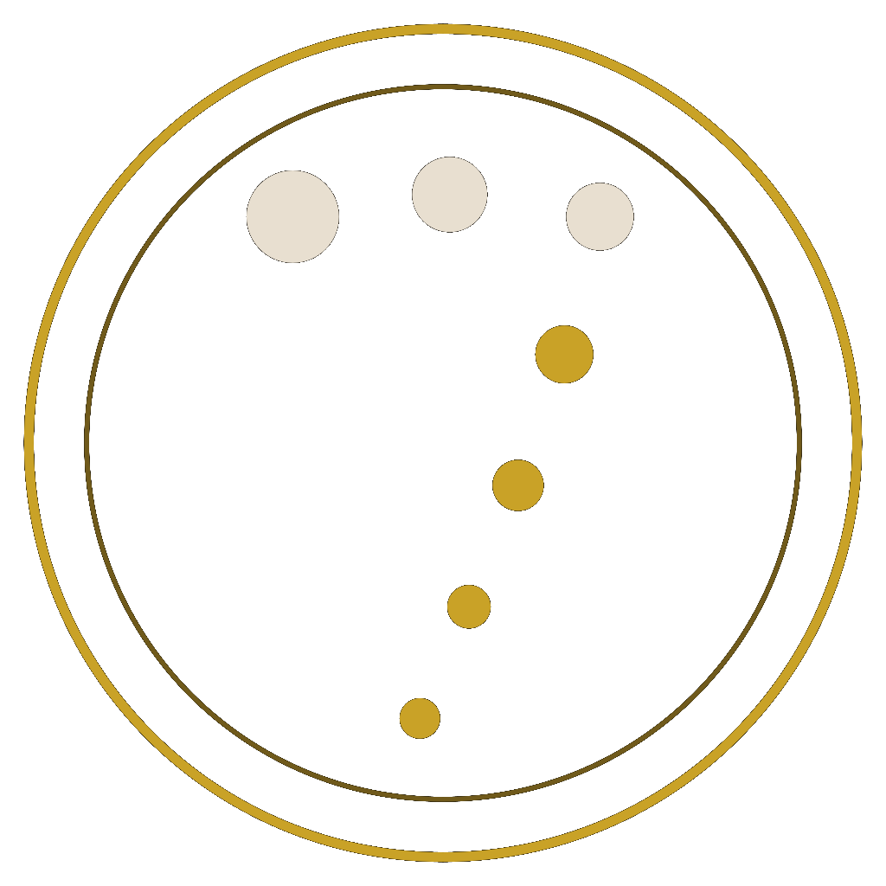
Seven Feet Travel Updates
Occasional notes on smart hotel offers, special sailings, new guides, and travel ideas worth knowing about. I’ll keep this light and useful: occasional updates only, no spam.
The Agency
Seven Feet Travel is a boutique luxury travel advisory that plans personalized trips around how you actually travel, from hotels and dining to the details in between. The planning draws on 25+ years inside the travel and hospitality industry.
My grandmother had an Arabic nickname for me. In English, it is seven feet. She said I could never sit still.
I would plan the next vacation while I was still on one, feet planted on one continent while I figured out which of the other six to go to.
Best fit for travelers who want to give themselves back their time, whether they’re planning a hotel stay, cruise, group trip, or custom itinerary that deserves thoughtful care and a few extra touches.
Hotels, restaurants, experiences, and logistics, curated around how you actually like to travel, not a generic itinerary.
Full day-by-day plan or a loose framework with great picks. Your call every time.
Preferred rates, room upgrades, and supplier relationships most travelers can't access on their own.
Before, during, and after your trip. No handoffs, no hold music.
Travel planning shaped by 25+ years on the inside.
From writing paper tickets at STA Travel to building hospitality technology, I have seen the industry from nearly every angle.
I know what great service looks like because I have helped deliver it, across thousands of guest stays, events, and group experiences.
My background in hotel sales and group travel gives me a practical understanding of rates, value, service expectations, and what happens behind the scenes.
I bring firsthand perspective from around the world, not just online research or recycled recommendations.
I think about location, arrival flow, room type, service style, pacing, restaurants, transfers, and the little moments that make a trip feel better.
My travelers should feel looked after, with thoughtful planning up front and support if something needs attention along the way.

Planning Process
Travel planning should feel exciting, not overwhelming. Whether you need a single hotel, a cruise, a multi-stop itinerary, or support for a more complex trip, I help turn the moving pieces into a plan that feels thoughtful, personal, and easy to follow.
Share where you want to go, who’s traveling, your timing, budget, and what you want the trip to feel like.
Some trips only need a great hotel or cruise booking. Others need more detailed planning, research, coordination, and support.
I research hotels, routes, cruises, transportation, experiences, and the details that can make the trip smoother, smarter, and more memorable.
I’ll share recommendations, talk through options, and adjust the plan based on what feels right for you.
Once the key pieces are booked, I help keep the details organized and stay available for questions, changes, and support before and during travel.
Planning Services
Why book with me? I help take the guesswork out of travel planning. I do the research and give you back your time.
Tier 1 · Accommodations & Transport
Single reservations for accommodations or transport. Handled with the same attention to detail as any full itinerary.
Includes
Tier 1B · Cruise
Standard cruise reservations for up to 4 guests, covering cabin selection, dining, and shore excursion guidance.
Includes
Tier 2 · Multi-Destination Trips
Multiple hotels, rental cars, or coordinating several moving parts across destinations. Includes up to 2 hours of planning work, with additional time available at $50 per hour.
Includes
Tier 3 · Expeditions & Complex Journeys
Around-the-world itineraries, safaris, multi-country expeditions requiring deep research, vendor coordination, and ongoing trip support.
Includes
Group Travel · Hotel or Cruise
Room blocks or multiple cruise cabins, hotel or cruise. Flat fees are based on group size and room count.
Includes
October 2026
Three places I'm planning around right now. Each one is a shortlist, not a tourism brochure.
Seven Feet Travel Guide
Harbour drama, coastal walks, easy ferries, excellent dining, and neighborhoods that reward a slower look.
Sydney mixes harbour icons with ferries, coastal walks, and neighborhoods worth wandering. The CBD and Circular Quay anchor the Opera House, Harbour Bridge, museums, and ferry connections, while beaches like Bondi and Manly balance city energy with ocean air. For official inspiration and trip ideas, browse Sydney on Visit NSW.
Late summer (February and March) runs hot and humid with intense UV; May through June cools with some rain; July and August stay mild by US standards, with nights rarely far below 10°C (50°F).
Nonstop flights from the US. Sydney Kingsford Smith (SYD) has nonstop options including Los Angeles (Qantas, United, American codeshare, Delta; about 15 to 16 hours), San Francisco (Qantas, United; about 16 to 17 hours), Dallas-Fort Worth (Qantas A380; about 17 hours), Houston (United seasonal; about 17.5 hours), and Honolulu (Qantas; Alaska for connections). LAX usually offers the most competition on fare; DFW on Qantas works well for a single-carrier trip with mileage earning.
Airport to city. SYD sits about 8 km south of the CBD. The Airport Link train reaches Central in about 13 minutes (runs roughly every 10 minutes; expect about AUD $19 to $21 including the airport station surcharge). Taxis or rideshares take 30 to 60 minutes depending on traffic (budget roughly AUD $45 to $65). Book a private transfer if you want a guaranteed pickup after a long haul or an early arrival.
Opal and transit. Pick up an Opal card at the airport, convenience stores, or newsagents; tap on and off every ride on trains, buses, light rail, and ferries. Daily caps are near AUD $18.70, weekly near AUD $50, with lower weekend caps on Saturdays and Sundays. Trains on the T-series cover the CBD and inner suburbs (T4 helps for Kings Cross and Bondi Junction). Light rail L2/L3 runs along George Street toward Circular Quay. Ferries are ideal for Manly, Taronga Zoo, and Balmain. Bus 311 connects Oxford Street to Kings Cross in about 10 minutes. Uber and Didi operate citywide. Driving downtown is rarely worth it: parking is pricey and traffic bites, so save a rental car for regional day trips.
Design-forward and walkable to Central Station, Chinatown, Surry Hills, Darling Harbour, and light rail, with Talk Shop as an all-day café and bar.
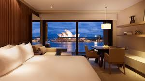
The harbour splurge for Opera House and Bridge views from The Rocks, steps from Circular Quay energy.
Heritage architecture with luxury service, wellness, and dining in the CBD.
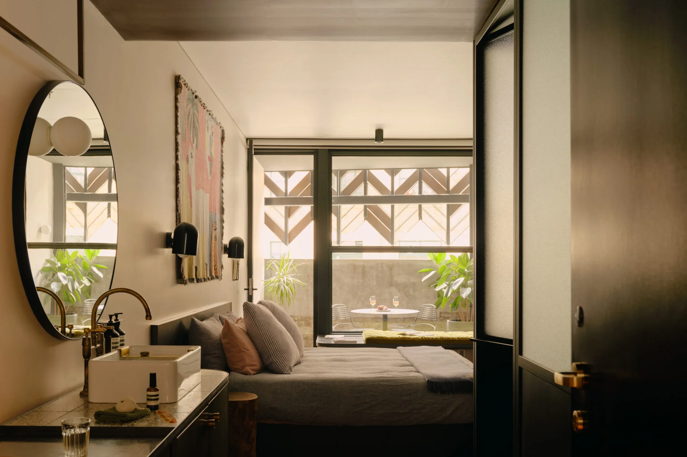
Boutique style, strong coffee, and proximity to Oxford Street dining without a large-chain feel.
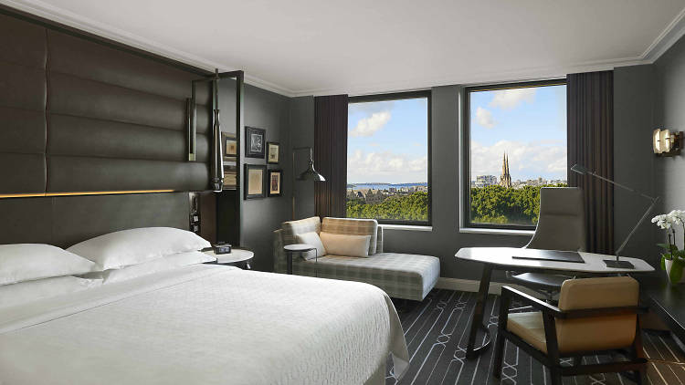
A classic Sydney address right on Hyde Park with spacious rooms, a rooftop pool, and easy access to the CBD, Surry Hills, and the eastern suburbs. A reliable choice when you want a well-located full-service hotel without straying from the Marriott/SPG ecosystem.
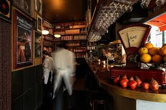
Trattoria energy: bold Italian plates, neighborhood buzz, and a streetside bar made for a pre-dinner drink. Reserve ahead for prime dinner times.
Polished Middle Eastern and North African inspired tasting menu: memorable for a celebration meal or a refined business dinner.
One of Sydney's most beloved specialty coffee spots, tucked into Surry Hills with a menu that takes brunch just as seriously as the coffee. This is where you start your morning when you're staying in the neighborhood.
A fun, no-fuss spot that does bold, punchy flavors and doesn't take itself too seriously. Exactly the kind of place you stumble into and end up talking about for the rest of the trip.
Bangkok street food done right in the heart of Sydney's Thai Town, with the kind of flavors that make you wonder why you don't eat Thai noodles for every meal. Casual, loud, and absolutely worth it.
A neighborhood wine bar with a serious natural wine list and small plates that punch way above what you'd expect. This is the spot for a slow evening that accidentally turns into a late night.
Sydney's oldest pub, sitting right in the middle of The Rocks and brewing its own beers on site since 1841. Order a pint, grab a seat, and soak in the fact that people have been doing exactly this for nearly 200 years.
Another Rocks institution and one of Sydney's oldest continuously licensed pubs, with a great corner location, cold beers, and the kind of lived-in energy that no new bar can manufacture. This is where you go after BridgeClimb.
Seven Feet Travel Shortlist
A Few NYC Favorites
Think of this less as a guide and more as the answer I give friends when they text me "what should I do in NYC."
It's a tighter edit on purpose: a few places I have actually enjoyed, booked, or recommended when someone wants the city to feel a little more dialed-in from the start. I wouldn’t send you somewhere I didn’t love myself.
Use it when you need a good hotel base, a real-occasion dinner, a bakery stop worth detouring for, a cocktail night with personality, a workout that feels very New York, or a smarter way into Broadway.
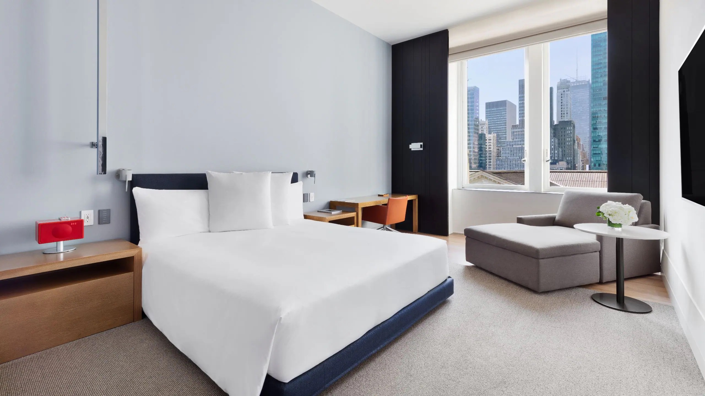
Book it for the location: Bryant Park, the Library, Midtown access, and easy movement uptown, downtown, or to Broadway. I can help compare dates, rates, perks, and room types before you lock it in.
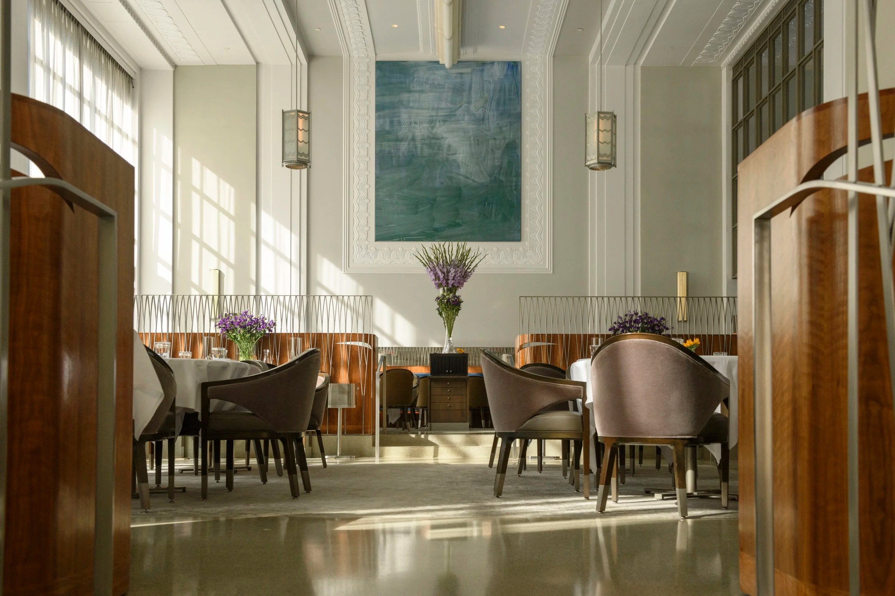
The one for a real occasion: polished, theatrical, and very much a plan-ahead reservation.
Go for the pistachio croissant people fight over, then keep walking through the neighborhood like you meant to discover it casually.
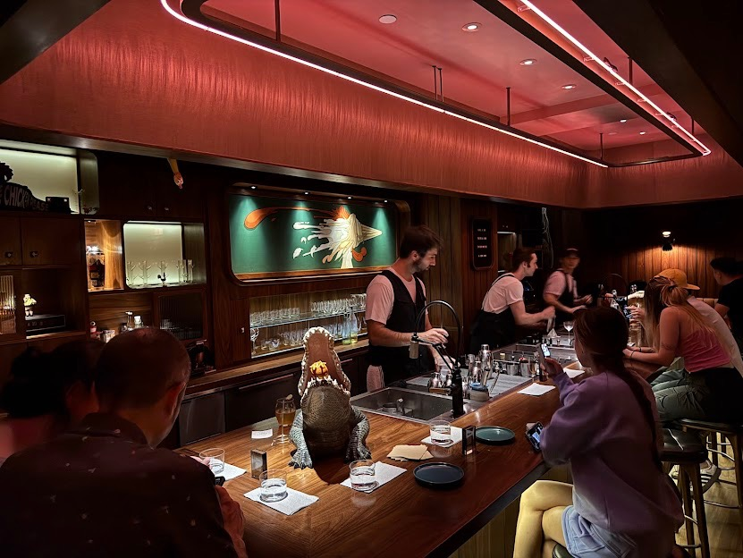
Cocktails that taste like dinner, in the best possible way. Book ahead when you can; this is not a secret anymore.
Hudson Yards energy, live-class buzz, and a very specific kind of NYC morning if you like your travel with a sweat slot built in. You generally need a Peloton membership to book, but people ask me about this all the time because I have taken so many classes. If you are curious, ask me before your trip and I can talk you through what to watch for.
You can often do better than the obvious sticker price. TodayTix is a good starting point, and I can share the specific trick I use when you want a show night without blowing the trip budget.
Seven Feet Travel Guide
Classic icons, neighbourhoods, pubs, Theatre, markets, cocktails, and the hotels that make London feel easy.
London is one of those cities that rewards repeat visits. The first trip can be Big Ben, Buckingham Palace, and the Tower of London, but the better version of London is found by walking neighborhoods, lingering in pubs, booking a great dinner, seeing a show, wandering a market, and finding a hotel that makes the city feel easy.
This guide is not meant to be every possible thing to do in London. It is the version I would send someone who wants a mix of classic London, stylish hotels, excellent food, smart neighborhoods, pubs, Theatre, cocktails, markets, and a few places I personally love.
U.S. travelers and many other visa-free visitors usually need a UK Electronic Travel Authorisation, known as an ETA, before traveling. Follow the official GOV.UK entry guidance for who needs an ETA, how long you can stay, and the current fee (officially £20 at time of writing in the doc). Each traveler needs their own ETA, including children.
London is best approached with a little planning, but not too much. Book the meals, afternoon tea, cocktail bars, and Theatre you care about most. Leave room for wandering. Some of the best London days are built around one anchor plan and a lot of walking before and after.
Most travelers arrive through Heathrow or Gatwick. Heathrow is the easiest airport for central London if you are staying in areas like Mayfair, Marylebone, Soho, Covent Garden, or the City. The Heathrow Express runs to Paddington in about 15 minutes from Heathrow Central, while the Elizabeth line is slower but often more practical because it continues across central London.
Gatwick works well too, especially if the fare is better. Trains connect Gatwick with London Victoria and other central stations. I would choose based on flight price, arrival time, and where you are staying.
Use contactless payment or an Oyster card. Transport for London says pay as you go works across the Tube, buses, DLR, London Overground, most Elizabeth line services, Thames Clippers river buses, and most National Rail services within London zones. Contactless is usually easiest, but use the same card or device when tapping in and out so you are charged correctly.
The Tube is excellent, but London is also a walking city. The best days often combine the Tube with long walks through neighborhoods. Taxis and rideshare are useful late at night or when dressed up, but traffic can make them painfully slow.
London is very card-friendly. Keep a little cash if you like, but you can do most of the city with a card or mobile wallet. For transit, do not overthink it. Tap in, tap out, and keep moving.
Weather changes quickly. Bring layers, a small umbrella, and comfortable shoes that still look decent. London is not the place for a day built around “just one quick walk.” That walk becomes 18,000 steps.
These are the hotels I’d include for a traveler who wants reliable locations, strong public ratings, and a good base for exploring.
Polished, grown-up London without the Soho crush. Near Oxford Street, Marylebone, Hyde Park, and Mayfair, with easy access to the rest of town.

A great east London base beside Liverpool Street for transit, markets, restaurants, and Shoreditch wandering, with design layered over history.
Style and efficiency with a central base without full luxury pricing. Compact rooms, strong public spaces, ideal if you are out all day.
Flagship address where Park Lane meets Mayfair: park-and-palace views, serious spa and dining rooms, and a concierge desk built for last-minute West End tickets. Ideal when you want Hyde Park Corner or Green Park walks before black-tie reservations.
The old Bow Street courthouse reimagined as velvet, marble, and atrium-height drama steps from the Royal Opera House. Treat the NoMad Restaurant and bars as part of the stay: this is the pick when you want curtain times and late rooms on the same short walk.
Soho. This is compressed London energy: queer nightlife strips, cramped cocktail bars, late kitchens, Chinatown edges, and the spillover crowds from Leicester Square Theatres. Nights run long here, so anchor one reservation and leave room for a second spontaneous stop.
Covent Garden and Seven Dials. Yes, performers and tourists pack the Piazza, but Seven Dials and the quieter fingers of Neal’s Yard reward slow turns. Shops stay fun even if you buy nothing; pre-Theatre wine bars and snug restaurants make this one of the easiest first-night bases.
Camden Town. Music mythology, sprawling markets, canals, louder street-food pitches. Brilliant if you crave volume and grit; tougher if overstimulation already peaked earlier in the day.
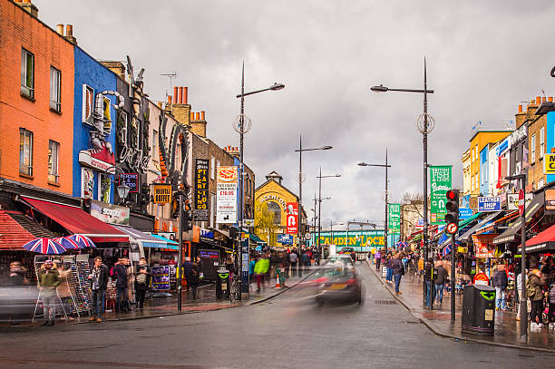
Marylebone. Feels quieter than Oxford Street hysteria without leaving central. Smart cafés, small galleries, boutiques, and locals’ pubs read more residential than postcard. Hyde Park sits a few streets south for resetting your steps.
Mayfair. Heavier wallets, immaculate tailoring, discreet hotel bars, and private-club echoes even when you never step inside one. Dip in for a serious drink or polished shopping rather than pretending you will crisscross it daily.
Shoreditch and Spitalfields. Murals bleed into arches under the railway lines, Vietnamese on Kingsland Road competes with Sunday markets, cocktail bars tuck into basements. It is louder and messier than Mayfair but ideal when you crave creative eats and wandering without a plotted route.
South Bank. The Thames walkway strings Tate Modern to Borough, the river breeze keeps summer tolerable, and St Paul’s reads like a postcard from the Millennium Bridge. Pair it when you already want mileage and intermittent coffee stops rather than boutiques.
Notting Hill. Pastel terraces, antiques on Portobello Road when stalls open Saturday, quieter cafés on weekday mornings. Best when schedules allow drifting without ticking every door.
King’s Cross. Regenerated around the station throat: Coal Drops Yard for design-led shopping, canals for low-stress strolling, and train links when you dart out toward Cambridge or Brighton for a breath.
Greenwich. Take the Thames Clipper if time allows so the Dome and masts creep into frame slowly. Observatory views, Maritime Museum pacing, markets for lunch feel like a deliberate exhale compared to frantic West End turnarounds.
Richmond. Leaves core London behind for riverside paths, grassy Richmond Park glimpses (deer if luck holds), pubs that skew local. Anchor a slow brunch and let the timetable loosen.
Kensington. Museum rows, Kensington Palace lawns, quieter residential streets branching toward Hyde Park. Ideal when you pair serious gallery time with a west London stroll rather than cramming monuments.
London rewards planning one showpiece meal without turning the rest of the week into spreadsheets. Rotate fine counter seats with casual rooms you can tumble into sweaty from the Tube and one or two food-hall afternoons when grazing beats a seated lunch.
Fine dining
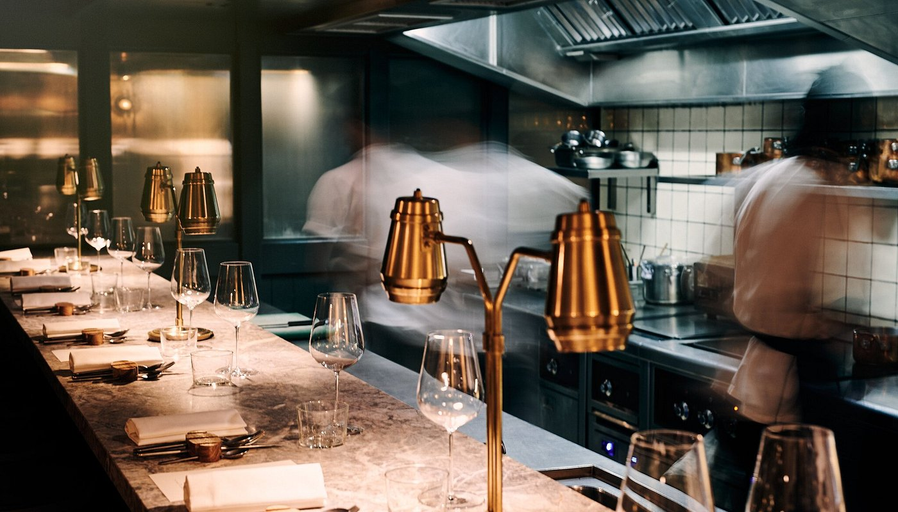
Twelve seats around a cellar counter below The Blue Posts in Soho: Michelin-led modern British menus served in timed sittings. Book as early as itineraries allow and treat punctuality seriously; snag an upstairs drink at The Blue Posts if you arrive early.
Upscale

Neon Big Mamma energy: towering pastas, roaring rooms, birthdays at neighboring tables almost guaranteed. Loud and fun by design.
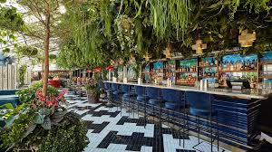
On the Opera Terrace above Covent Garden Market: glass roof, Peruvian-Japanese fire, and Piazza people-watching. The choice for upscale Theatre nights in WC2; book Heron Tower when you want skyline drama instead.
Casual
Takeaway
Afternoon Tea
When you crave variety without juggling reservations, halls let everyone split off, reconvene, and keep moving. Arrive hungry, snag high tops early on weekends, and treat these as grazing missions rather than one-plate lunches.

Want department-store glamour? Selfridges Foodhall beside Marylebone and Harrods food halls in Knightsbridge still deliver cinematic spreads when you crave air conditioning and tastings under chandeliers.
Alternate intensity: one night anchored in a witty cocktail salon, another that ends leaning on varnish-scuffed Victorian wood with a respectable pint glass. Booking the theatrical bars earns its drama; pubs benefit from forgiving timing when stage times slip.
Still thirsty for cider trails and historic taps? Dig into CAMRA maps for heritage pubs beyond this short list.
London is dense enough that you do not need to invent drama. Pick one anchor per half day, let walking do the connective tissue, and save the “icons only” sprint for when energy is high.
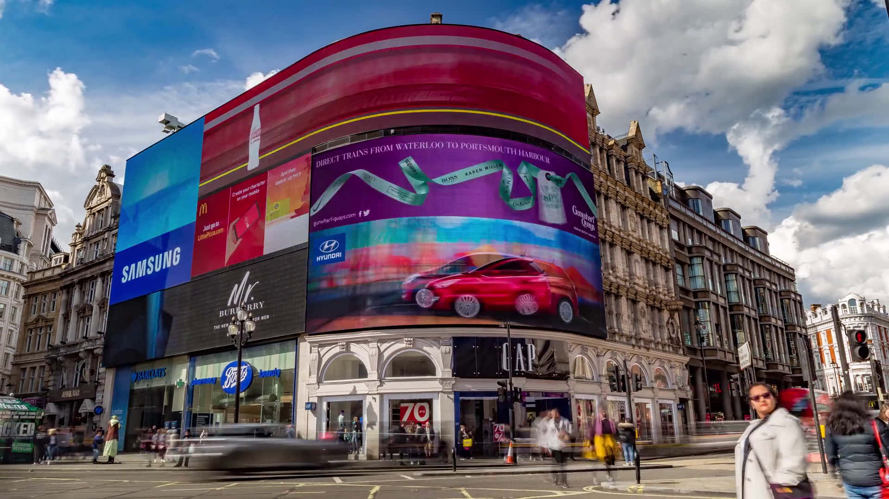
For Theatre, book ahead if a specific show matters. For comedy, live recordings, cabaret, drag, smaller shows: good options scatter across the city, so planning helps.
Soho works as an easy queer-friendly nightlife starting point. Cocktails orbit Mayfair, Covent Garden, Soho, Shoreditch, and the City; when velvet-curtain bars feel precious, tuck in a grounding pint first at Soho staples like The Shakespeare’s Head, then escalate into the marquee reservations.
London is generally easy to navigate, but use normal city awareness. Watch phones near station entrances, busy sidewalks, and nightlife. On the Tube, keep bags zipped and respect rush-hour crush. Late at night, a black cab or rideshare beats a gritty walk home when energy is gone.
Curated Travel
SPLURGE is the more curated side of Seven Feet Travel, created for travelers who are open to spending a little more when the experience is worth it.
Think of it like the difference between economy and business class. You are still getting where you want to go, and you are still getting great service. SPLURGE is just for the moments when you want a little extra: upgraded experiences, special sailings, added perks, group savings, or a trip that feels more elevated from the start.
If you are this type of traveler, please reach out for access. I’ll just ask a few quick travel questions so I can share the offers and ideas that actually match the way you like to travel.
Tell me a little about how you like to travel so I can share the right kinds of SPLURGE opportunities with you.
Request AccessSPLURGE on Hotels
A rotating set of hotel opportunities with savings, perks, credits, and elevated stay benefits. Booking windows and availability can move quickly, so reach out before you plan around a specific offer.
Turks & Caicos
Tablet Hotels Sale: 20% Off Beach Enclave
Save 20% on room rates at Beach Enclave with Tablet Hotels, plus Tablet Plus perks including daily breakfast for two, a room upgrade subject to availability, early check-in/late check-out, and a property credit.
Book: Now – Jul 6, 2026
Travel: Now – Dec 22, 2026
New York City
Third Night Free at Gansevoort Meatpacking
Stay 3 or more consecutive nights at Gansevoort Meatpacking NYC and enjoy a complimentary third night while exploring the best of the Meatpacking District.
Book: Now – Aug 31, 2026
Travel: Now – Aug 31, 2026
St. Lucia
Paradise Between The Pitons at Ladera Resort
Escape to paradise at this adults-only resort and save 40% when you stay 3 or more nights.
Book: Now – Oct 31, 2026
Travel: Now – Oct 31, 2026
Santa Monica
Complimentary Third Night at Hotel Casa del Mar
Stay 3 nights and enjoy a complimentary third night on select summer stays through December 31, 2026. Minimum 3-night stay; blackout dates and restrictions apply.
Book: Now – Dec 28, 2026
Travel: Now – Dec 30, 2026
Kauai
MAKANI-WIND Build Your Own Retreat at 1 Hotel Hanalei Bay
Create a personalized wellness retreat with a 4-night minimum stay, featuring a $500 nightly wellness credit, daily breakfast, beach rentals, sessions with a personal Wellness Coach, and access to spa, fitness, and wellness experiences. Book at least 14 days in advance.
Book: Now – Dec 31, 2026
Travel: Now – Dec 31, 2026
Maui
$1,000 Resort Credit at Wailea Beach Resort
Includes LUMINOUS Program amenities with a 5-night minimum stay: daily breakfast for two, a $1,000 resort credit, welcome amenity, Wi-Fi, airport transfers, early check-in/late check-out subject to availability, and potential room upgrade.
Book & travel: Now – Jan 15, 2027
View hotelLondon
Suite Perks & Airport Transfers at The Dorchester
Stay in a One-Bedroom Suite or higher and enjoy daily breakfast, a £100 hotel credit per day, and complimentary roundtrip transfers from all major airports.
Book: Now – Mar 31, 2027
Travel: Now – Mar 31, 2027
London
Complimentary Airport Transfers with Suite Stay at 45 Park Lane
Stay in a One-Bedroom Suite or above to receive daily breakfast, a £100 daily hotel credit, and roundtrip transfers from all major airports.
Book: Now – Mar 31, 2027
Travel: Now – Mar 31, 2027
SPLURGE on Cruises
Cruise opportunities with group pricing, added value, and sailings that have a little more energy built in.
Current SPLURGE Opportunity
A RED HOT Greece sailing roundtrip from Athens/Piraeus with Santorini, Crete, Ephesus/Kusadasi, and an overnight-style Mykonos moment built into the week.
Cabins: Central Sea Terrace or Sea Terrace.
Rate is based on double occupancy. Depending on cabin type, total cost is about $3,700-$3,900 per cabin with taxes included, or roughly $1,850-$1,950 per person.
Booking separately is $400+ more, so there are solid savings by booking into the group.
Classic WiFi for 1 device per sailor, $100 Bar Tab Sailor Loot, and dining pre-booking 45 days before sailing.
Fare includes: 1 Wi-Fi connection per sailor; all dining across 20+ eateries with menus created by award-winning chefs; soda, water, non-pressed juices, teas, and drip coffee; fitness classes like yoga, meditation, cycling, and HIIT; and entertainment with jaw-dropping shows included. Alcoholic beverages are reasonably priced with beer, wine, and cocktails starting at $7, $9, and $11 respectively (subject to change). You can purchase Bar Tab Sailor Loot in advance and get a boost after pre-paying a certain threshold. Ask me for more info!
20% deposit is due within 24 hours of booking. Final payment is due 120 days before sailing, and you can make payments along the way.
This is a RED HOT sailing, which means special guests, extra energy, and a very fun crowd on board.
Pricing and availability can move, especially for a group sailing. Send me a note and I can check current cabin availability, confirm the rate, and walk you through the deposit timing.
Client Reviews
Paul was so helpful in planning and booking my hotel stay. He made sure I got the best offer available and that all of my comfort requirements were met and then some. Planning is the hardest part of travel for me. Paul's knowledge and attention to detail made the process easy, listening to my needs and presenting the best possible options. Flawless vacation. I will be working with him again.
James P. · Seattle
I had an amazing experience working with Paul from start to finish. Every detail of my trip was handled with care, professionalism, and genuine thoughtfulness. Paul took the time to understand exactly what I wanted and turned it into a seamless, stress-free babymoon that exceeded my expectations. Looking forward to planning my next trip with Paul.
Christopher T. · San Francisco
FAQ
Bougie on a Budget
Use the scanner when you already have a destination, hotel, or date range in mind and want to know whether the price you found is actually the best one.
It compares live hotel rates across major booking platforms so you can spot better deals, check different dates, and decide whether to book now, keep looking, or set a price alert.

Policies
Get in Touch
Tell me where you want to go, when you are thinking of traveling, and what kind of trip actually feels like you.